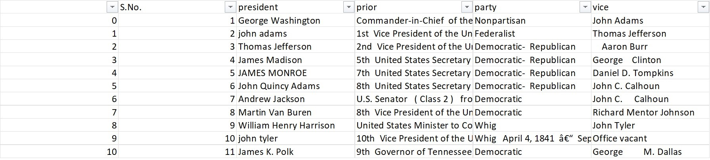
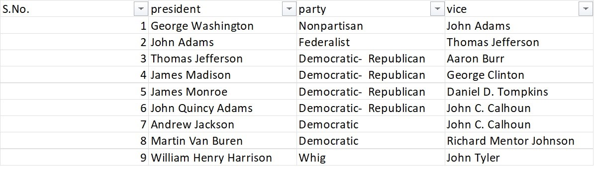
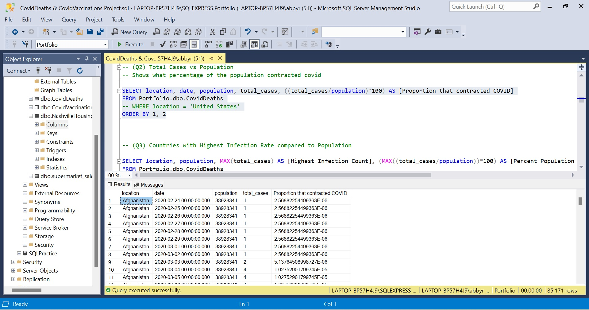

Uncleaned Data:
Cleaned Data:

In this project, I worked in Excel where I cleaned up data using Excel features. In this
particular project, I fixed the president and vice president column (so that each name is
sentence cased), removed duplicates, adjusted the options under party, adjusted the salary and
date created/updated columns. Also, I deleted columns that I deemed were not necessary for my
project.

In this project, I worked in Microsoft SQL Server to do some data exploration in the Covid
Deaths and Covid Vaccinations data. I wrote some queries on SQL to answer questions related to
the dataset. I used the following skills:
- Joins
- CTE's
- Temp Tables
- Windows Functions
- Aggregate Functions
- Creating Views
- Converting Data Types
Graphic 1:

Graphic 2:

In this project, I worked in Tableau to display and visualize data obtained from the Airbnb
dataset.